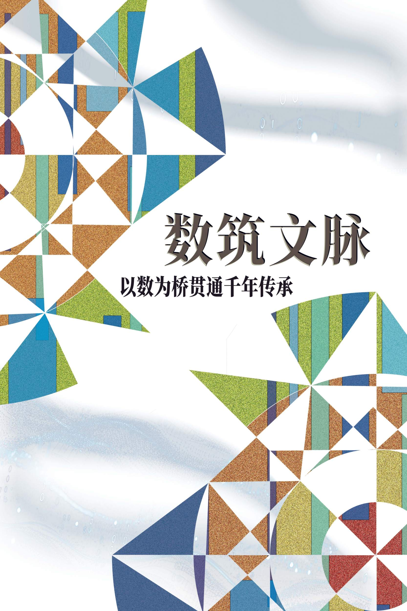
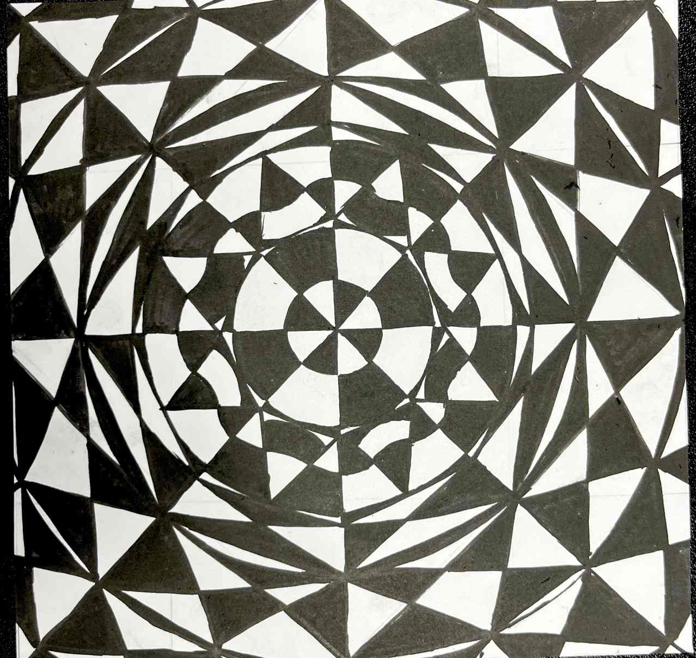

品牌视觉系统：茶语

城市脉动海报主视觉

设计草稿与色彩方案

排版实验与细节调整
作品介绍
《城市脉动》是一幅以都市生活节奏为主题的海报设计作品。通过抽象的几何图形和动态的色彩搭配，展现了现代城市的活力与韵律感。
设计思路
本作品以"律动"为核心概念，采用了流动的线条和渐变色彩来表现城市的动态特征。设计灵感来源于城市中的交通流量、人群移动和建筑轮廓，通过简化和抽象化处理，创造出具有视觉冲击力的构图。
技术要点
- 使用Adobe Illustrator绘制矢量图形和动态线条
- 通过渐变色彩表现运动感和深度
- 采用非对称构图增强视觉张力
- 运用网格系统确保元素间的和谐关系
学习收获
通过这个项目，我学会了如何将抽象概念转化为具体的视觉语言，掌握了动态构图和色彩渐变的运用技巧。同时，我也认识到设计作品需要考虑观者的视觉体验和情感共鸣，通过精心的布局和色彩选择来传达设计理念。